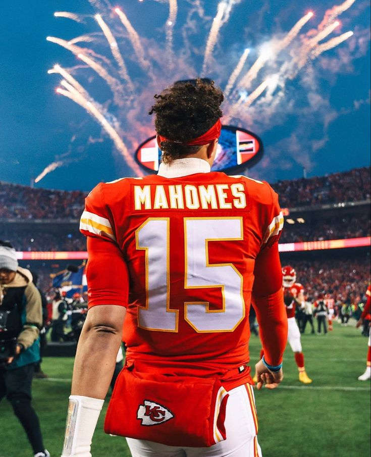
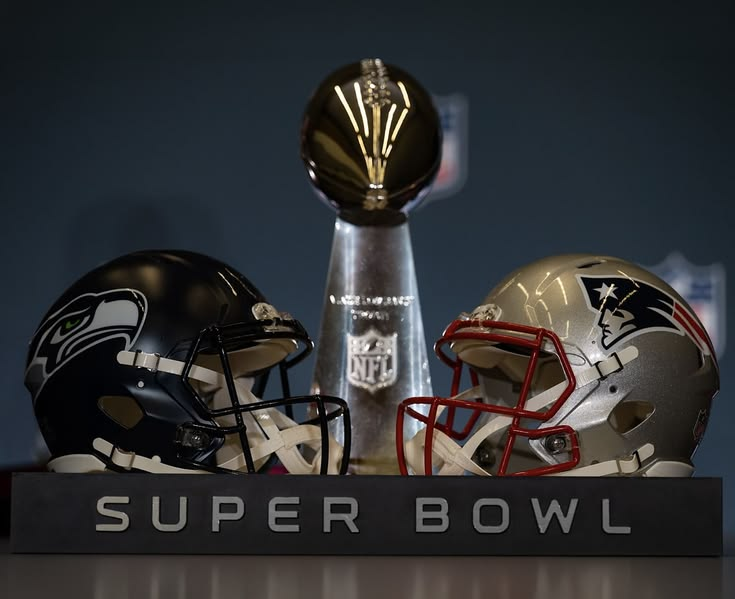
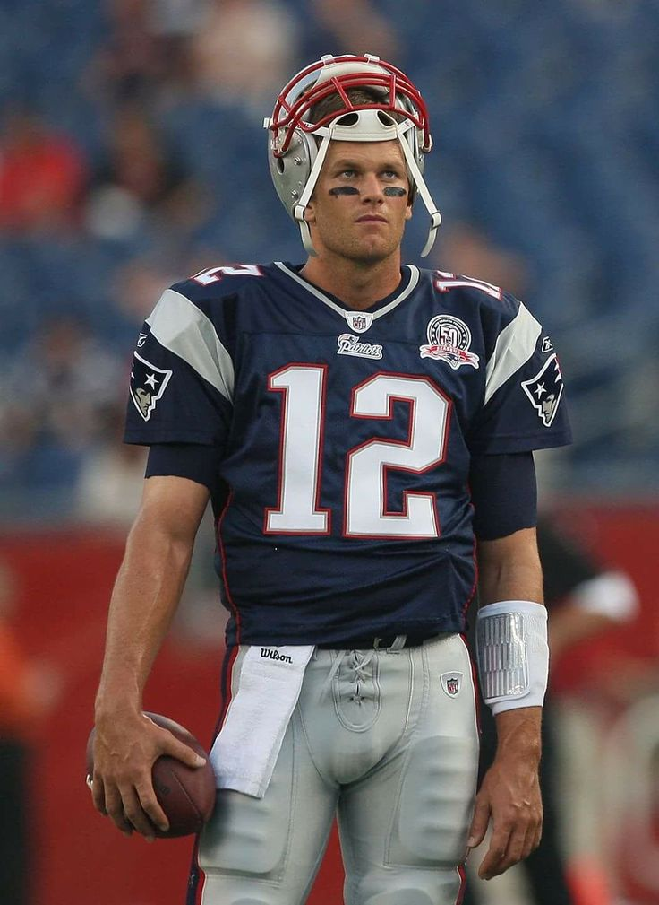

La historia del Super Bowl comenzó el 15 de enero de 1967, cuando los Green Bay Packers vencieron a los Kansas City Chiefs en lo que entonces se llamaba el "Juego de Campeonato Mundial". Con el tiempo, este enfrentamiento evolucionó hasta convertirse en el evento deportivo y cultural más grande del planeta.
Algunas competiciones fueron legendarias y quedaron en la historia.


